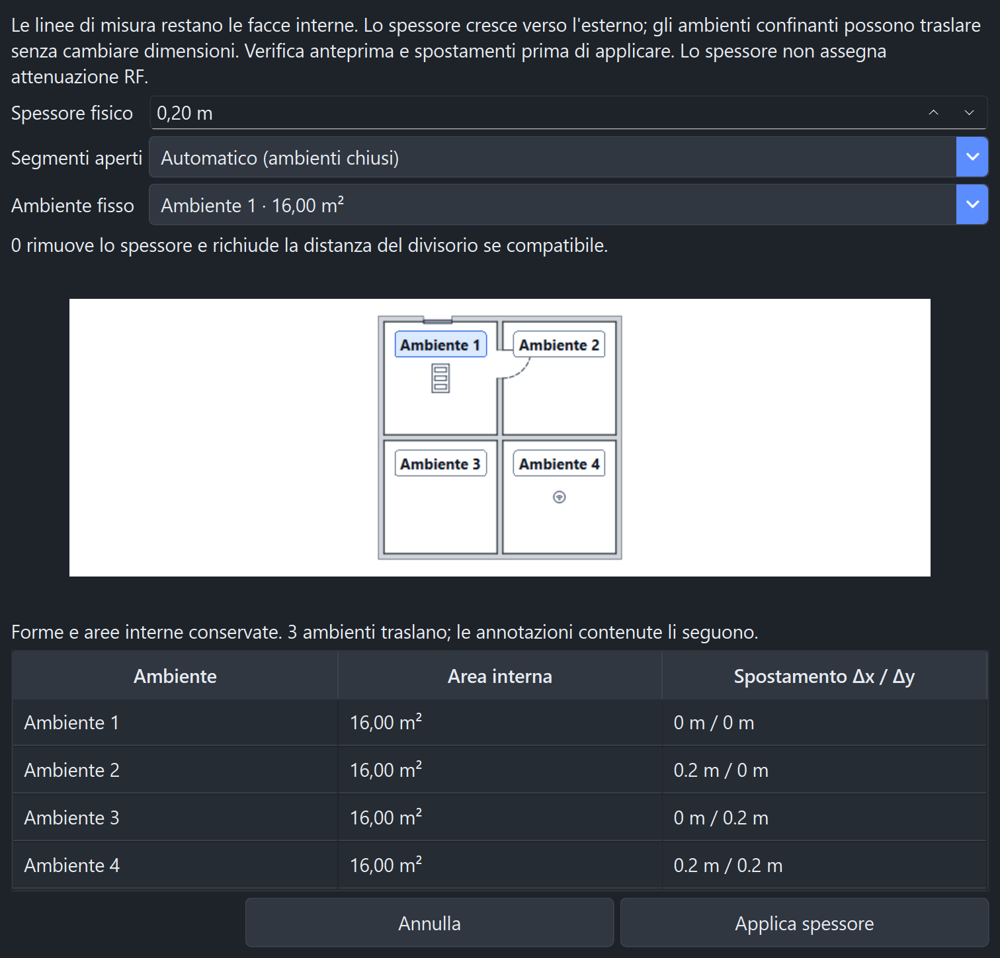
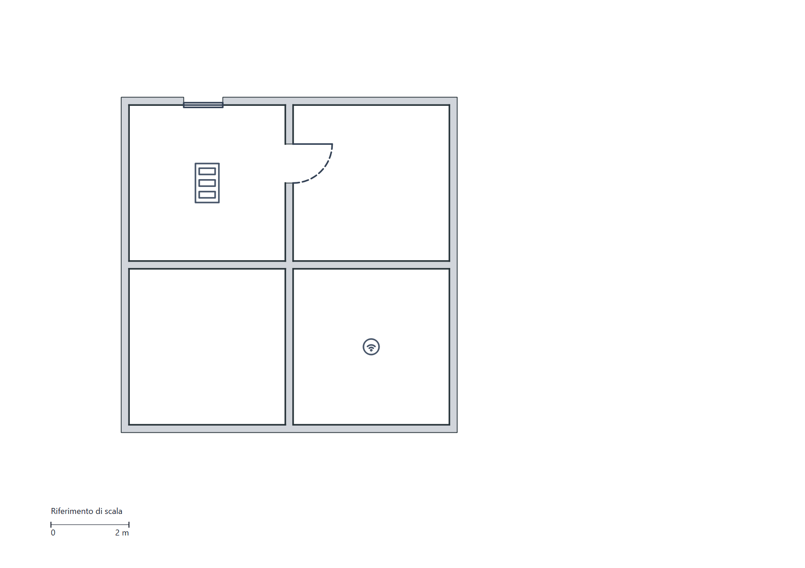

Wi-Fi RF Survey Analyzer · 7 novembre 2026 · verifica del sorgente Windows/Python
Le linee mantengono il significato di misure interne. I divisori condivisi separano gli ambienti con traslazioni rigide: due locali da 4 m più un divisorio da 20 cm occupano 8,20 m, prima delle pareti esterne.
118test dedicati superati
48configurazioni UI verificate
2.068 + 479test e sottotest della suite completa
Non è una garanzia matematica su ogni possibile input. Il comportamento verificato e i casi rifiutati sono riportati qui, insieme ai limiti delle prove.
Per segmenti aperti occorre scegliere il lato. Le annotazioni contenute e i simboli AP seguono l'ambiente traslato. La semplice conferma di uno spessore esistente conserva il valore originale, anche quando la visualizzazione in piedi è arrotondata.

| Ambito | Verifica |
|---|---|
| Interni | Lunghezze e aree analitiche conservate; confronto dei contorni traslati prima/dopo. |
| Disposizioni | Ambienti singoli, adiacenti, reticoli fino a 12 stanze nella matrice parametrica, giunti a T, rotazioni 0°/35°/90° e spessori diversi sui singoli tratti. |
| Curve | Cerchi e archi isolati con offset circolare stabile; controllo del collasso del raggio. I divisori curvi condivisi sono rifiutati esplicitamente. |
| Segmenti | Tagli, fusioni compatibili, duplicati sottili, direzioni inverse, rotazioni e riunione dei tagli obsoleti. |
| Selezione e gomma | Il corpo fisico è selezionabile. Le facce corrispondenti del divisorio sono coordinate; la cancellazione ricostruisce sezioni di stipite o continuazioni del perimetro. |
| Aperture | Porte singole, doppie, scorrevoli, solo telaio e finestre; taglio attraverso l'intera profondità e sulla faccia opposta, anche su pareti oblique. |
| Oggetti e dati | AP associati, identità e numeri dei simboli, annotazioni, proprietà esatte in piedi, annullamento/ripristino e risultati di finestre divenuti obsoleti. |
| Persistenza e livelli | Salvataggio/riapertura, livello nascosto, trasferimento della selezione, schema delle proprietà e compatibilità dei disegni preesistenti. |
| Output | Percorsi fisici condivisi da scena nativa, raster, Live/HTML e stampa/JPEG; scala di stampa conservata. |

Una separazione che cambia le coordinate è bloccata se esistono già punti RF o maschere Boundaries manuali. Le posizioni AP memorizzate come sole coordinate richiedono prima la conversione in simboli. Gli spessori esterni senza movimento restano applicabili.
Mediane sul computer di sviluppo, tre esecuzioni per calcolo e venti per il passaggio dell'oggetto. Il lavoro di disposizione avviene in anteprima; il normale posizionamento usa gli indici precalcolati.
| Ambienti | Prima applicazione | Modifica spessore | Quote durante posizionamento |
|---|---|---|---|
| 16 | 27,7 ms | 32,0 ms | 0,21 ms |
| 49 | 201,1 ms | 252,8 ms | 0,40 ms |
| 100 | 629,7 ms | 862,3 ms | 0,43 ms |
Riproduzione: tools/benchmark_walls.py --output risultato.json. Misure complete. Questi tempi non rappresentano una scansione RF o una garanzia su altri computer.
Suite completa sequenziale nativa: 2.068 test e 479 sottotest superati in 160,10 secondi, uscita 0. La copertura dedicata comprende cancellazione dei divisori, geometrie ruotate e precisione imperiale.
Controlli Ruff essenziali, controlli F sui nuovi moduli e compilazione dei moduli completati. Prove UI native in EN/IT/FR/ES, tema chiaro/scuro, scale 100/125/175%, metri/piedi; immagini dell'anteprima e dell'export ispezionate.
Le proprietà fisiche opzionali memorizzano profondità in pixel di piano e lato orientato. Le equazioni sulle normali sono vincoli esatti entro tolleranza numerica; lo spazio nullo minimizza lo scorrimento tangenziale. Le aree dei locali rimangono analitiche. Solo i confronti tra rappresentazioni derivate di curve e poligoni escludono un margine grafico di 0,01 px.
I disegni con spessore usano il formato 2 per segmenti/curve/livelli. I disegni senza spessore restano nel formato 1; non sono state aggiunte librerie. Le proprietà attraversano i normalizzatori e lo storico, e il rendering non usa lo spessore grafico della penna come misura fisica.
Non sono stati generati EXE/ZIP né eseguiti lavori su stampante fisica. Non è stata validata sul campo una nuova modellazione RF: questa modifica riguarda la geometria del piano.